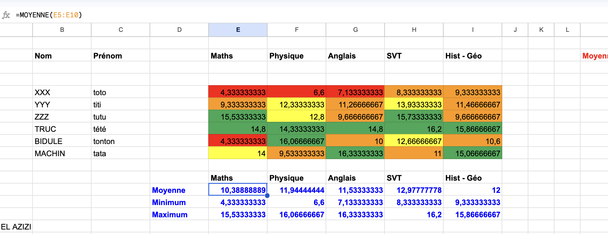
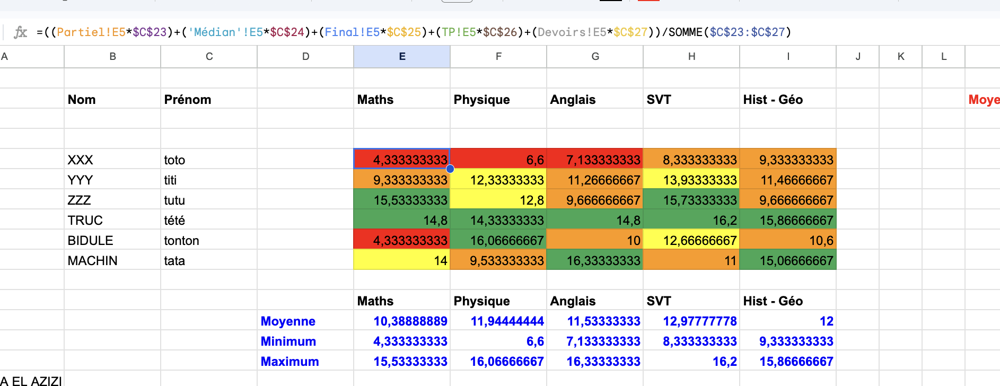
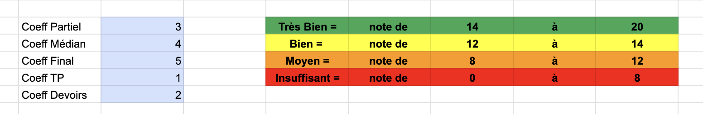
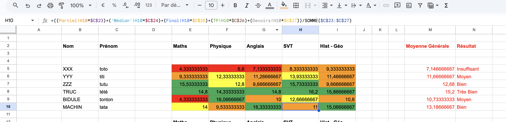

Ce site a été créé dans le cadre de l'UV NF05 au sein de l'UTC
Dans ce projet, j’ai réalisé un système de gestion de notes à l’aide d’un tableur. Le but était de centraliser les résultats d’une classe, calculer automatiquement les moyennes des étudiants, attribuer des mentions et créer des graphiques permettant d’analyser les résultats plus facilement.
J’ai commencé par créer plusieurs feuilles de calcul : une feuille « Résultats » ainsi que cinq feuilles correspondant aux différentes évaluations : Partiel, Médian, Final, TP et Devoirs. Chaque feuille d’évaluation sert à saisir les notes des étudiants pour un type d’épreuve précis.
Dans la feuille « Résultats », j’ai créé un tableau principal contenant les noms et prénoms des étudiants ainsi que les différentes matières : Maths, Physique, Anglais, SVT et Histoire-Géo. Chaque colonne correspond à une matière et chaque ligne correspond à un étudiant.
J’ai ensuite ajouté une colonne permettant de calculer la moyenne générale de chaque étudiant. Plus bas dans la feuille, j’ai également créé un second tableau permettant de calculer automatiquement la moyenne de la classe pour chaque matière, ainsi que les notes minimales et maximales.
Afin d’éviter de saisir plusieurs fois les mêmes informations, j’ai utilisé des références de cellules permettant de recopier automatiquement les noms et prénoms depuis la feuille « Résultats » vers les autres feuilles. Cette méthode permet de modifier les informations une seule fois tout en les mettant à jour automatiquement dans tout le classeur.
Les notes ont ensuite été saisies manuellement sur 20 pour chaque étudiant, dans chaque matière et pour chaque type d’évaluation. Chaque feuille contient donc les notes correspondant à une évaluation précise.
Une fois toutes les notes saisies, j’ai calculé automatiquement les moyennes des étudiants pour chaque matière ainsi que leur moyenne générale. J’ai également calculé les statistiques de la classe comme la moyenne générale par matière, la note minimale et la note maximale.

J’ai ensuite créé une zone dédiée aux coefficients dans la feuille « Résultats ». Les coefficients utilisés sont les suivants : coefficient 3 pour les partiels, coefficient 4 pour les médians, coefficient 5 pour les finaux, coefficient 1 pour les TP et coefficient 2 pour les devoirs.
Ces coefficients permettent de donner plus d’importance à certaines évaluations dans le calcul final des moyennes.
Les moyennes finales de chaque matière ont été calculées automatiquement à partir des notes des différentes évaluations et des coefficients associés. Les formules ont ensuite été recopiées vers la droite et vers le bas afin de calculer automatiquement toutes les notes du tableau.

Après le calcul des moyennes générales, j’ai mis en place un système de mentions automatiques. La moyenne générale de chaque étudiant est calculée dans la colonne M et la colonne N affiche automatiquement la mention correspondante.
Les mentions utilisées sont :
Cette attribution est réalisée automatiquement grâce à des fonctions conditionnelles.

Afin de rendre les résultats plus lisibles, j’ai utilisé la mise en forme conditionnelle sur les moyennes des étudiants dans chaque matière. Pour cela, je suis allé dans le menu « Format », puis « Mise en forme conditionnelle ». J’ai sélectionné la plage de cellules allant de E5 à I10 puis créé plusieurs règles selon les intervalles de notes.
Chaque catégorie possède une couleur différente afin de visualiser rapidement les bonnes et mauvaises notes.

J’ai créé plusieurs graphiques afin de représenter les résultats de manière plus visuelle.
Le premier graphique est un graphique circulaire permettant de visualiser la répartition des mentions dans la classe. Ce graphique montre la proportion d’étudiants ayant obtenu les mentions « Très Bien », « Bien », « Moyen » ou « Insuffisant ».
J’ai également créé un graphique à colonnes permettant de comparer, pour chaque matière, la moyenne de la classe, la note minimale et la note maximale.
Voir les [[Graphiques ]]
Les graphiques permettent d’analyser plus facilement les résultats globaux de la classe. Le graphique à colonnes permet de comparer les performances dans les différentes matières et d’observer les écarts entre les notes minimales et maximales.
Le graphique circulaire permet quant à lui de visualiser rapidement la répartition des mentions dans la classe et de mieux comprendre les résultats globaux obtenus par les étudiants.
Ce projet m’a permis d’apprendre à utiliser plusieurs fonctionnalités importantes d’un tableur comme les formules automatiques, les références de cellules, les fonctions statistiques, la mise en forme conditionnelle et les graphiques.
Grâce à ce travail, j’ai pu créer un système complet de gestion des résultats scolaires permettant d’automatiser les calculs et de faciliter l’analyse des performances des étudiants.